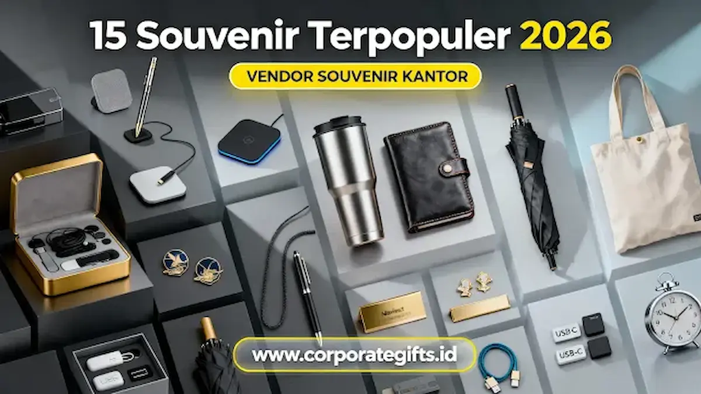

Corporate Gifts ID - Souvenir 2026 paling dicari oleh perusahaan berfokus pada produk premium, fungsional, dan eco-friendly seperti smart tumbler, wireless charger, dan exclusive gift set. Pemilihan corporate gift yang tepat kini bukan sekadar formalitas, melainkan berfungsi ganda sebagai alat branding strategis dan representasi kualitas perusahaan untuk memperkuat hubungan jangka panjang dengan klien, karyawan, maupun peserta event.
Poin Kunci Tren Souvenir Perusahaan 2026:
- Pergeseran ke Produk Premium: Meninggalkan souvenir murah demi investasi branding berkelas yang tahan lama.
- Dominasi Kategori Fungsional: Memprioritaskan barang dengan nilai guna tinggi di lingkungan kerja harian.
- Komitmen Sustainability: Produk ramah lingkungan berbahan stainless, kanvas, dan bambu semakin diminati.
- Teknik Custom Modern: Aplikasi laser engraving, UV printing full color, serta emboss logo menjaga estetika eksklusif.
- Pengalaman Unboxing Elegan: Custom packaging hardbox dan kraft tebal menyempurnakan corporate identity.
Penerima hadiah saat ini semakin selektif. Mereka menghargai produk yang bermanfaat, berkualitas, dan memiliki estetika modern. Jika sebuah perusahaan memberikan souvenir generik, pesan branding yang ingin disampaikan bisa kehilangan kekuatan. Sebaliknya, merchandise perusahaan yang modern dan dikemas elegan mampu memberikan kesan profesional yang bertahan lama.
Daftar Isi Artikel
- Perubahan Tren Souvenir 2026 dalam Dunia Bisnis
- 15 Rekomendasi Souvenir 2026 Paling Populer dan Berkesan
- Kategori Souvenir 2026 Paling Laris untuk Perusahaan
- Komparasi 5 Kategori Souvenir Perusahaan 2026
- Cara Memilih Souvenir 2026 Berdasarkan Brand Image
- Tren Desain Souvenir 2026 yang Meningkatkan Citra Brand
- Pertanyaan Seputar Souvenir 2026 (FAQ)
- Kesimpulan Praktis
Perubahan Tren Souvenir 2026 dalam Dunia Bisnis
Sebelum masuk ke rekomendasi produk, memahami arah tren tahun 2026 adalah langkah strategis. Berikut adalah lima perubahan besar yang kini membentuk preferensi perusahaan dalam pengadaan cenderamata korporat:
1. Lonjakan Permintaan Souvenir Premium
Entitas B2B seperti perusahaan manufaktur, kampus, instansi pemerintahan, lembaga keuangan, hingga startup teknologi semakin meninggalkan souvenir murah yang cepat rusak. Souvenir premium kini diposisikan sebagai investasi branding jangka panjang yang mencerminkan prestise institusi.
2. Produk Kategori Mid-High Mendominasi
Perusahaan kini secara sadar memilih produk dengan utilitas nyata dan desain mutakhir. Perangkat kerja modern seperti merchandise teknologi premium berupa wireless charger, smart tumbler, dan planner executive menjadi pilihan utama para pengambil keputusan.
3. Sustainability Menjadi Selling Point Utama
Keselarasan dengan program lingkungan dan CSR membuat korporasi beralih ke souvenir ramah lingkungan (eco-friendly). Penggunaan material alami yang dapat didaur ulang mempertegas komitmen keberlanjutan bisnis.
4. Kustomisasi Berkelas Menjadi Standar Baru
Teknik personalisasi konvensional mulai ditinggalkan demi metode yang lebih rapi seperti laser engraving, UV printing digital, dan hotstamp emboss. Hal ini memastikan logo perusahaan terpampang elegan tanpa mengaburkan fungsi produk.
5. Fungsionalitas Lebih Diutamakan
Era 2026 menolak cenderamata yang hanya berakhir menjadi pajangan meja tanpa guna. Setiap produk wajib memberikan kenyamanan dan solusi praktis bagi aktivitas kerja harian penerimanya.
15 Rekomendasi Souvenir 2026 Paling Populer dan Berkesan
Berdasarkan riset preferensi klien korporat kami, berikut 15 pilihan souvenir terbaik yang terbukti efektif meningkatkan persepsi positif brand Anda:
1. Smart Tumbler Temperature Display
Tumbler berinsulasi vakum dengan layar sensor suhu sentuh LED tetap menjadi primadona hadiah modern. Menjaga suhu minuman panas atau dingin hingga 12 jam, sangat cocok untuk profesional aktif di perbankan, instansi kesehatan, maupun perusahaan teknologi.
2. Wireless Charging Pad Fast Charge
Dengan meluasnya adopsi pengisian daya nirkabel, wireless charging pad tipis dengan permukaan matte atau aksen kayu menghadirkan kemudahan praktis di meja kerja tanpa kabel yang berantakan.
3. Flashdisk OTG Type-C (64–128GB)
Kebutuhan transfer data berkecepatan tinggi lintas laptop dan smartphone menjadikan flashdisk dual-port (USB-A dan USB Type-C) solusi esensial bagi peserta seminar teknis maupun pelatihan korporat.
4. Planner & Agenda Kerja 2026 Premium
Format klasik dengan sampul kulit sintetis bertekstur, kertas tebal bergaris, serta kalender kerja terpadu memberikan sentuhan profesional yang sangat dihargai oleh para manajer dan eksekutif.
5. Exclusive Metal Pen Set
Cenderamata formal yang merefleksikan kehormatan. Pilihan souvenir pulpen metal dengan ukiran nama atau logo grafir laser adalah standar hadiah resmi untuk penandatanganan kontrak dan apresiasi tamu VIP.
6. Diffuser Aromatherapy Portable
Mendukung kenyamanan ruang kerja dan relaksasi pikiran di kantor ber-AC. Sangat diminati oleh divisi HRD untuk program employee wellness dan apresiasi loyalitas staf.
7. Tote Bag Eco-Friendly Premium
Dibuat dari kanvas katun tebal daur ulang dengan kompartemen laptop. Opsi serbaguna untuk seminar kit berskala besar yang mendukung kampanye keberlanjutan lingkungan.
8. Travel Organizer Set
Solusi ideal bagi perusahaan yang sering menugaskan tim untuk perjalanan dinas luar kota. Menjaga kabel, paspor, kartu nama, dan perangkat elektronik tetap tertata rapi.

Pilihan corporate gift set berlogo resmi dengan kemasan rigid box premium untuk meningkatkan prestise brand di hadapan klien dan mitra kerja.
9. Powerbank Slim 10.000–20.000 mAh
Perangkat cadangan daya berkapasitas besar dengan bodi polimer tipis. Memberikan jaminan ketenangan bagi pekerja dinamis saat menghadiri konferensi seharian penuh.
10. Smart Desk Lamp Adjustable LED
Lampu meja lipat hemat energi dengan kendali sentuh temperatur cahaya. Cocok dipadukan dalam paket apresiasi karyawan work-from-home maupun penataan workstation modern.
11. Premium Bluetooth Speaker Mini
Menghasilkan audio jernih bertenaga dalam kemasan saku berlapis logam kokoh. Logo instansi yang dicetak presisi pada gril speaker memperkuat citra modern dan inovatif.
12. Jaket Workwear Premium
Merchandise sandang (apparel) berkualitas tinggi dengan bahan windproof atau fleece lembut. Sangat efektif menciptakan rasa kebersamaan saat gathering tahunan atau seragam lapangan.
13. Notebook Moleskine Style Emboss Logo
Buku catatan jilid benang bersampul hardcover lentur dengan pita pembatas dan kantong dokumen belakang. Menjadi favorit dalam paket seminar eksklusif direksi.
14. Luxury Gift Set Corporate 2026
Kombinasi harmonis beberapa item pilihan seperti tumbler insulasi, pulpen metal, dan card holder yang dikemas rapi dalam rigid box beludru berpita kustom.
15. Hampers Kantor 2026 Tema Modern
Paket bingkisan bertema gaya hidup sehat dan produktivitas, mengombinasikan cangkir keramik elegan, biji kopi artisan, dan planner kerja berlogo.
Kategori Souvenir 2026 Paling Laris untuk Perusahaan
Untuk mempermudah alokasi anggaran procurement, berikut pengelompokan cenderamata berdasarkan konteks perhelatannya:
- Souvenir Seminar & Workshop: Mengutamakan paket terintegrasi berisi pulpen, buku catatan, lanyard ID card, dan paket seminar kit lengkap.
- Souvenir VIP & Eksekutif: Dikhususkan bagi jajaran direksi, komisaris, dan pemangku kepentingan utama dengan kemasan souvenir custom VIP eksklusif.
- Internal Branding & Onboarding: Difokuskan pada kebutuhan perlengkapan meja kerja karyawan baru seperti mug keramik, kalender, dan souvenir kantor fungsional.
- Tech Corporate Gift: Ditujukan untuk audiens melek digital dengan pilihan wireless charging pad, smart lamp, dan bluetooth audio.
- Eco-Friendly Corporate: Menitikberatkan pada produk ramah lingkungan seperti souvenir tumbler stainless steel, sedotan kaca, dan tas kanvas blacu.
Komparasi 5 Kategori Souvenir Perusahaan 2026
Gunakan tabel komparasi berikut untuk mencocokkan segmen acara, target penerima, dan estimasi anggaran pengadaan B2B perusahaan Anda:
| Kategori Souvenir | Contoh Item Unggulan | Karakteristik & Material | Target Audiens | Estimasi Budget / Unit |
|---|---|---|---|---|
| Seminar & Workshop | Notebook A5, Pulpen Metal, Totebag Kanvas | Fungsional, Kertas Daur Ulang, Kanvas Katun | Peserta Pelatihan, Delegasi Seminar, Mahasiswa | Rp25.000 - Rp75.000 |
| Internal Branding | Mug Sablon, Jaket Workwear, Desk Organizer | Tahan Lama, Keramik Food-Grade, Drill / Fleece | Karyawan Internal, Onboarding Staff Baru | Rp45.000 - Rp150.000 |
| Teknologi Modern | Smart Tumbler LED, Wireless Charger, Flashdisk OTG | Smart Tech, Bodi ABS Matte, Alumunium Alloy | Audiens IT, Startup, Fintech, Klien Usia Produktif | Rp65.000 - Rp185.000 |
| Eco-Friendly | Tumbler SUS304, Bambu Pen, Kraft Box Packaging | Reusable, Ramah Lingkungan, Daur Ulang Alami | Komunitas CSR, Perusahaan Multinasional, BUMN | Rp50.000 - Rp135.000 |
| VIP & Eksekutif | Exclusive Gift Set, Leather Organizer, Metal Pen | Mewah, Kulit PU Premium, Grafir Laser, Rigid Box | Direksi, Dewan Komisaris, Mitra Strategis VVIP | Rp150.000 - Rp500.000+ |
Cara Memilih Souvenir 2026 Berdasarkan Brand Image
Menentukan cenderamata yang tepat membutuhkan keselarasan antara identitas korporat dan ekspektasi audiens penerima:
- Tetapkan Tujuan Pengadaan: Tentukan apakah fokus utama Anda adalah pengenalan brand baru, apresiasi pelanggan setia, atau penghargaan prestasi karyawan internal.
- Pahami Profil Demografi Penerima: Kenali rentang usia, jabatan, serta kebiasaan kerja audiens untuk memastikan barang yang diberikan benar-benar terpakai.
- Optimalkan Alokasi Anggaran: Lebih baik memesan satu atau dua produk berkualitas tinggi yang awet bertahun-tahun daripada paket berisi banyak barang berkualitas rendah.
- Utamakan Desain Minimalis dan Kemasan Rapi: Finishing logo yang proporsional pada kemasan berkelas jauh lebih berkesan dibanding logo berukuran terlalu besar yang mencolok.
- Pilih Vendor B2B Terpercaya: Pastikan penyedia jasa memiliki rekam jejak produksi yang jelas, kapasitas tepat waktu, serta jaminan garansi penggantian barang rusak.
Tren Desain Souvenir 2026 yang Meningkatkan Citra Brand
Estetika visual cenderamata modern tahun 2026 berkiblat pada keanggunan minimalis:
- Palet Warna Netral & Elegan: Dominasi warna matte black, deep navy, sage green, dan warm sand yang netral gender dan tampak eksklusif.
- Kemasan Kraft & Rigid Box Bertekstur: Mengombinasikan material ramah lingkungan dengan teknik hotstamp foil untuk sensasi membuka kado yang mewah.
- Finishing Laser Engraving Presisi: Memberikan ukiran permanen tanpa tinta kimia yang menyatu dengan material logam atau kayu.
- Tipografi Modern Bersih: Penggunaan jenis huruf sans-serif yang simpel, tegas, dan mudah dibaca.
Pertanyaan Seputar Souvenir 2026 (FAQ)
Kesimpulan Praktis
Tahun 2026 menetapkan tolok ukur baru dalam industri corporate gift. Souvenir bukan lagi sekadar pelengkap seremonial, melainkan representasi fisik dari nilai, visi, dan penghargaan perusahaan terhadap para mitranya.
Dengan memilih produk yang menggabungkan fungsionalitas harian, nilai keberlanjutan, serta pengemasan eksklusif, perusahaan Anda dapat membangun hubungan kemitraan yang semakin kokoh dan saling menguntungkan. Diskusikan rencana kebutuhan cenderamata korporat Anda bersama tim konsultan terpercaya di CorporateGifts.ID.

Ditulis oleh: Arinda Zakia
Senior Corporate Gifting SpecialistKonsultan senior pengadaan cinderamata korporat dan merchandise B2B di CorporateGifts.ID. Berpengalaman lebih dari 8 tahun dalam kurasi hadiah fungsional bernilai estetika tinggi bagi korporasi dan institusi di Indonesia.
Lihat Profil Lengkap & Panduan Lainnya